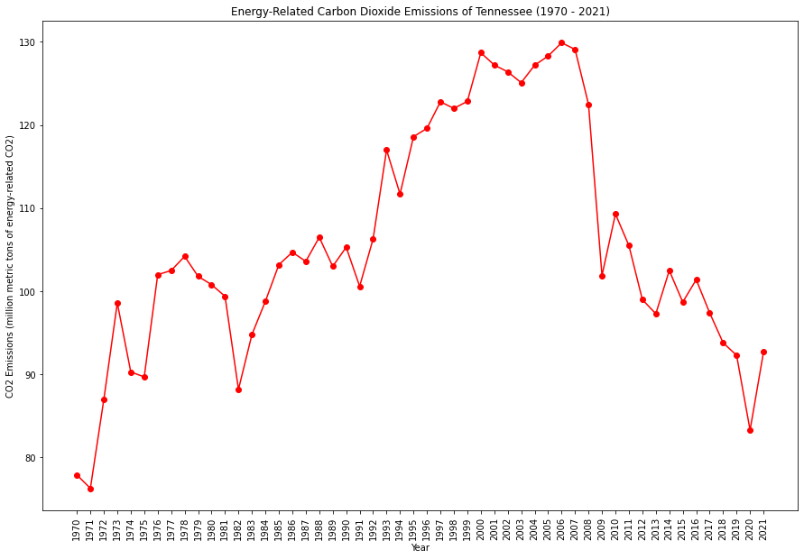
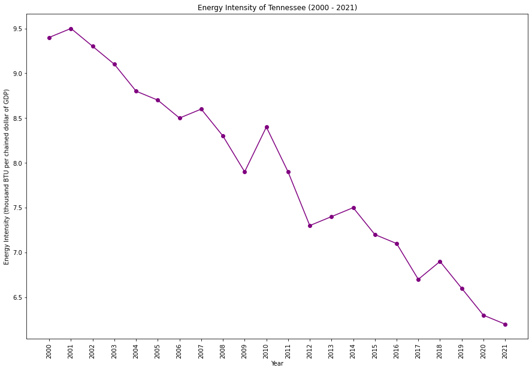

|  | |
|  |
Tennessee has a diverse energy mix, with a historical reliance on coal. Efforts to diversify include increasing renewable energy sources and promoting energy efficiency. The state faces challenges related to air quality, particularly in urban areas, and is working on initiatives to address environmental concerns.